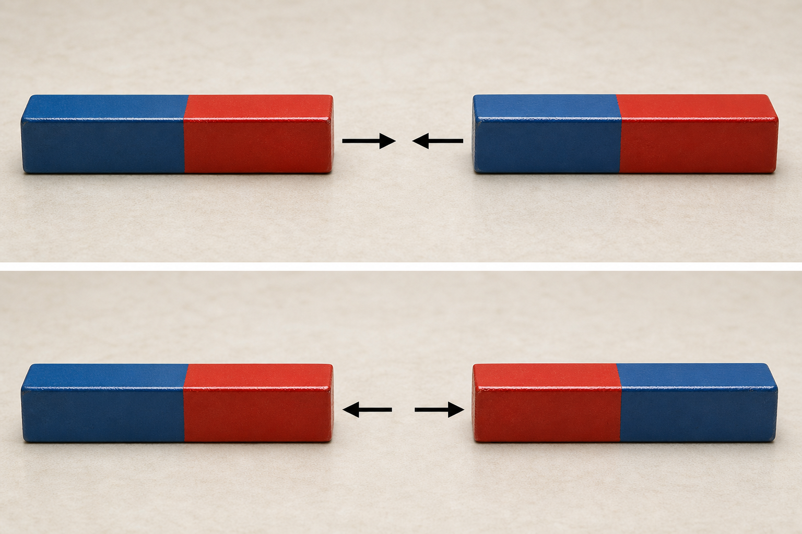
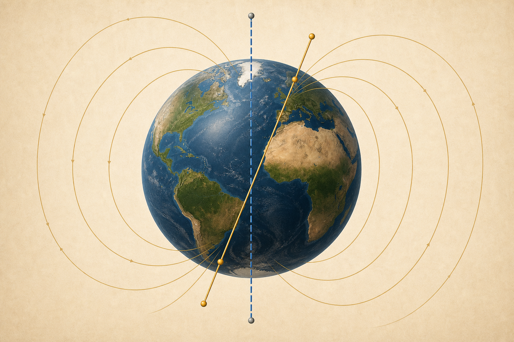
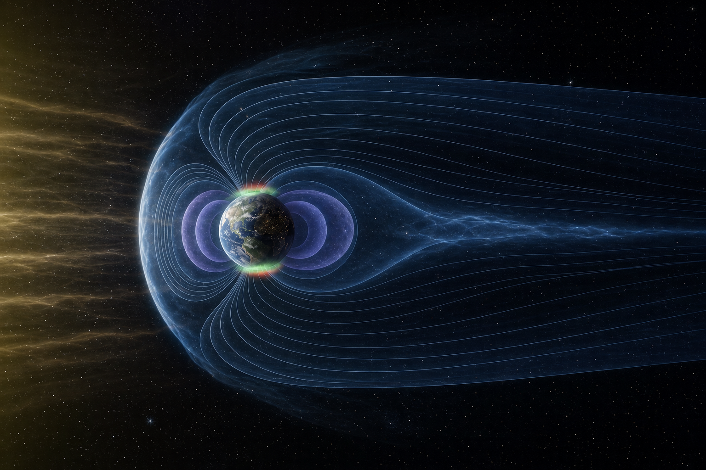

Sistemas Multi Física - Profesor Javier Pereyra
Magnetismo: de los imanes al campo de la Tierra
Polos, materiales magnéticos, campo magnético, geomagnetismo y fuerza sobre cargas en movimiento.
1 Idea inicial: una interacción invisible
Un imán puede atraer un clip sin tocarlo y una brújula puede orientarse aunque no veamos qué la guía. Estas observaciones muestran una interacción asociada a cargas eléctricas en movimiento y a los momentos magnéticos microscópicos de la materia.
Las llamadas “líneas de campo” son un modelo: la tangente indica la dirección de \(\vec B\) y una mayor densidad de líneas representa un campo más intenso. No son hilos materiales.
2 Imanes, polos y origen microscópico
Todo imán posee dos regiones donde la interacción es más intensa: polo norte (N) y polo sur (S). Polos iguales se repelen y polos opuestos se atraen. Fuera del imán, las líneas se dibujan de N hacia S; dentro regresan de S hacia N y forman lazos cerrados.

¿Por qué aparecen polos? Los electrones tienen momento magnético, ligado especialmente a su espín. En materiales ferro y ferrimagnéticos, muchos momentos se organizan en dominios. Si esos dominios se compensan, el objeto no actúa como imán permanente; si muchos se orientan de modo semejante, aparece un dipolo macroscópico.
3 ¿Qué materiales son magnéticos?
Toda materia responde de algún modo a un campo, pero muchas respuestas son demasiado débiles para percibirlas con un imán escolar. Por eso “magnético” no significa solamente “atraído con fuerza”.
Respuesta inducida débil y opuesta al campo: cobre, bismuto, agua y grafito.
Atracción débil mientras actúa el campo: aluminio, magnesio y oxígeno molecular.
Dominios, respuesta intensa y posible imantación remanente: hierro, cobalto, níquel y aleaciones.
Momentos opuestos desiguales dejan un efecto neto: magnetita y ferritas.
4 Propiedades del campo magnético
| Propiedad | Lectura física |
|---|---|
| Es vectorial | En cada punto posee módulo, dirección y sentido. |
| Sus líneas no se cruzan | Un vector no puede tener dos direcciones distintas en el mismo punto. |
| Forma lazos cerrados | No comienzan ni terminan en polos magnéticos aislados. |
| Actúa sobre cargas móviles | La fuerza depende también de la velocidad y de su orientación respecto de \(\vec B\). |
5 Geomagnetismo: la Tierra como sistema dinámico
El campo terrestre se aproxima al de un dipolo inclinado, pero no es perfectamente simétrico y cambia con el tiempo. Su origen principal es la geodinamo: movimientos del hierro líquido conductor en el núcleo externo, junto con convección y rotación. La Tierra no es simplemente un imán permanente gigante.

| Concepto | Definición | ¿Cambia? |
|---|---|---|
| Polos geográficos | Intersecciones del eje de rotación con la superficie. | Son prácticamente fijos en la escala escolar. |
| Polos magnéticos | Zonas donde el campo es aproximadamente vertical. | Se desplazan y no coinciden con los geográficos. |
6 Magnetosfera, Van Allen y auroras
El viento solar comprime la magnetosfera del lado diurno y la alarga en una cola nocturna. La magnetosfera desvía y canaliza muchas partículas cargadas. Los cinturones de Van Allen son regiones donde quedan atrapadas partículas energéticas: no son una pared sólida ni bloquean toda radiación.
La magnetosfera y la atmósfera, trabajando juntas, reducen la radiación que alcanza la superficie y contribuyen a la habitabilidad. Las auroras ocurren cuando partículas energéticas son guiadas hacia regiones polares y excitan átomos y moléculas de la alta atmósfera; al desexcitarse, estos emiten luz.

7 Fuerza magnética: condición vectorial
El símbolo \(\times\) indica un producto vectorial. La fuerza resulta perpendicular al plano formado por \(\vec v\) y \(\vec B\).
Aquí se usa \(q\) con su signo. Para \(q>0\), el sentido se obtiene con la regla de la mano derecha. Para \(q<0\), todo el vector fuerza se invierte.
El signo de \(q\) invierte el sentido de giro. Para iguales \(|q|\), \(v\), \(B\) y \(m\), el módulo de la fuerza y el radio son iguales.
Producto vectorial en \(\mathbb{R}^3\)
Usamos valores numéricos desde el comienzo. La velocidad apunta hacia \(+x\) y el campo entra en la hoja, es decir, tiene componente \(z\) negativa:
El producto \(\vec v\times\vec B\) es el mismo para ambas partículas porque \(\vec v\) y \(\vec B\) no cambiaron. El signo de \(q\) aparece recién al calcular \(\vec F_m=q(\vec v\times\vec B)\): para \(q>0\) la fuerza apunta hacia \(+y\), y para \(q<0\) apunta hacia \(-y\).
Segundo ejemplo: vectores con tres componentes
Problema: sean \(\vec v=(1,2,2)\times10^6\,\mathrm{m/s}\), \(\vec B=(0,0,0{,}50)\,\mathrm T\) y \(q=+e=1{,}60\times10^{-19}\,\mathrm C\). Hallar \(\vec F_m\) y comprobar su módulo con la forma escalar.
1. Módulos y ángulo: \(|\vec v|=\sqrt{1^2+2^2+2^2}\times10^6=3{,}00\times10^6\,\mathrm{m/s}\) y \(|\vec B|=0{,}50\,\mathrm T\). Como \(\cos\alpha=\frac{\vec v\cdot\vec B}{|\vec v||\vec B|}=\frac{2}{3}\), resulta \(\sin\alpha=\frac{\sqrt5}{3}\).
2. Producto vectorial mediante la matriz \(\mathbf i,\mathbf j,\mathbf k\):
\[\vec v\times\vec B= \begin{vmatrix} \mathbf i & \mathbf j & \mathbf k\\ 1{,}0\times10^6 & 2{,}0\times10^6 & 2{,}0\times10^6\\ 0 & 0 & 0{,}50 \end{vmatrix}\] \[=(2{,}0\times10^6\cdot0{,}50)\,\mathbf i-(1{,}0\times10^6\cdot0{,}50)\,\mathbf j+0\,\mathbf k =(1{,}0,-0{,}50,0)\times10^6\,(\mathrm{m/s})\,\mathrm T.\]Atención al signo: la componente \(\mathbf j\) lleva un signo menos por el desarrollo \(+\mathbf i-\mathbf j+\mathbf k\).
3. Para \(q=+e\): \(\vec F_m=q(\vec v\times\vec B)=(1{,}60,-0{,}80,0)\times10^{-13}\,\mathrm N\).
4. Para \(q=-e\): \(\vec F_m=(-1{,}60,+0{,}80,0)\times10^{-13}\,\mathrm N\). Se invierten todas las componentes y, por lo tanto, el sentido.
5. Módulo desde sus componentes: \(|\vec F_m|=\sqrt{(1{,}60)^2+(-0{,}80)^2}\times10^{-13}=1{,}79\times10^{-13}\,\mathrm N\), tanto para \(q=+e\) como para \(q=-e\).
6. Comprobación escalar: \(|q||\vec v||\vec B|\sin\alpha=(1{,}60\times10^{-19})(3{,}00\times10^6)(0{,}50)\frac{\sqrt5}{3}=1{,}79\times10^{-13}\,\mathrm N\).
La fuerza es cero.
La fuerza tiene módulo máximo.
La fuerza magnética es cero.
Cambia la dirección de \(\vec v\), no su rapidez ni su energía cinética.
8 Forma escalar y unidades
\(\alpha\) es el ángulo entre \(\vec v\) y \(\vec B\), con \(0^\circ\leq\alpha\leq180^\circ\). Se usa \(|q|\) porque calculamos un módulo; el signo de la carga determina el sentido del vector.
Para valores fijos de \(|q|\), \(|\vec v|\) y \(|\vec B|\), \(F_{\max}=|q||\vec v||\vec B|\) cuando \(\alpha=90^\circ\). \(1\,\mathrm T=1\,\mathrm{N\,s/(C\,m)}\).
- Si se pide el vector fuerza —componentes, dirección o sentido—, usar \(\boxed{\vec F_m=q(\vec v\times\vec B)}\) con el signo real de \(q\).
- Si se pide el módulo de la fuerza, usar \(\boxed{|\vec F_m|=|q||\vec v||\vec B|\sin\alpha}\). Un módulo nunca puede ser negativo.
- Si se calcula el radio de la trayectoria, usar \(|q|\): el signo cambia el sentido de giro, pero no el valor del radio.
| Qué se calcula | Carga que se usa | Qué informa el signo |
|---|---|---|
| Vector \(\vec F_m\) | \(q\), con signo | Invierte la dirección y el sentido del vector. |
| Módulo \(|\vec F_m|\) | \(|q|\) | No aparece: el resultado debe ser \(0\) o positivo. |
| Radio \(r\) | \(|q|\) | No cambia el radio; sí cambia el sentido de giro. |
| Magnitud | Vector / módulo | Unidad SI |
|---|---|---|
| Fuerza magnética | \(\vec F_m\) / \(|\vec F_m|\) | newton (N) |
| Carga | \(q\) / \(|q|\) | coulomb (C) |
| Velocidad | \(\vec v\) / \(|\vec v|\) | m/s |
| Campo magnético | \(\vec B\) / \(|\vec B|\) | tesla (T) |
| Ángulo entre \(\vec v\) y \(\vec B\) | \(\alpha\) | grado o radián |
9 Ejemplo resuelto
Problema: un protón se mueve a \(3{,}0\times10^6\,\mathrm{m/s}\), perpendicular a un campo de \(0{,}20\,\mathrm T\). Calcular la fuerza magnética.
Datos: \(|q|=1{,}60\times10^{-19}\,\mathrm C\), \(|\vec v|=3{,}0\times10^6\,\mathrm{m/s}\), \(|\vec B|=0{,}20\,\mathrm T\), \(\alpha=90^\circ\).
Fórmula: \(|\vec F_m|=|q||\vec v||\vec B|\sin\alpha\).
Reemplazo: \(|\vec F_m|=(1{,}60\times10^{-19})(3{,}0\times10^6)(0{,}20)\sin90^\circ\).
Resultado: \(|\vec F_m|=9{,}6\times10^{-14}\,\mathrm N\).
Interpretación: aunque es pequeña, la fuerza puede curvar la trayectoria. Si \(\vec v\) apunta a la derecha y \(\vec B\) entra en la hoja, el protón se desvía hacia arriba; un electrón, hacia abajo.
Aplicación: ciclotrón
Dentro de cada cavidad en forma de “D”, el campo magnético uniforme es perpendicular a la velocidad y la fuerza magnética actúa como fuerza centrípeta. Por eso la partícula describe una semicircunferencia:
Problema: un protón con \(m=1{,}67\times10^{-27}\,\mathrm{kg}\), \(q=+e\) y \(v=3{,}0\times10^6\,\mathrm{m/s}\) se mueve perpendicularmente a \(B=0{,}20\,\mathrm T\).
Radio: \(r=\frac{(1{,}67\times10^{-27})(3{,}0\times10^6)}{(1{,}60\times10^{-19})(0{,}20)}=1{,}57\times10^{-1}\,\mathrm m\approx15{,}7\,\mathrm{cm}\).
Interpretación: el campo magnético curva la trayectoria, pero no aumenta la rapidez. Cada vez que la partícula cruza la brecha entre las “D”, un campo eléctrico realiza trabajo y aumenta \(v\); por eso también aumenta el radio. Si la carga fuera negativa, giraría en el sentido opuesto con el mismo radio para iguales \(m\), \(|q|\), \(v\) y \(B\).
10 Actividades
- Dibujá las líneas de \(\vec B\) de un imán de barra, con flechas fuera y dentro. Indicá dónde el campo es mayor y explicá por qué las líneas no se cruzan.
- Predecí qué ocurre al cortar un imán en tres partes. Dibujá sus polos y refutá la frase “queda un polo norte aislado”.
- Clasificá la respuesta esperada de un clip de acero, un alambre de cobre, papel de aluminio, una ferrita y un trozo de madera. ¿Por qué “no atraído visiblemente” no significa “sin respuesta magnética”?
- Experiencia: colocá un imán debajo de una hoja y, con supervisión, distribuí pocas limaduras de hierro. Dibujá el patrón, ubicá cuatro brújulas imaginarias y anotá dos límites del modelo. Mantené el imán lejos de dispositivos electrónicos.
- Armá un cuadro que compare polos geográficos y magnéticos según definición, origen, movilidad e instrumento de orientación. Explicá por qué una brújula no siempre apunta al norte geográfico exacto.
- Observá la imagen de la magnetosfera e identificá viento solar, lado diurno, cola, cinturones y auroras. Corregí: “Los cinturones son una muralla que genera auroras y bloquea toda radiación”.
- Una carga positiva se mueve hacia el este y \(\vec B\) apunta verticalmente hacia arriba. Aplicá la mano derecha para hallar \(\vec F_m\). Repetí para un electrón.
- Calculá \(|\vec F_m|\) para \(|q|=2{,}0\,\mu\mathrm C\), \(|\vec v|=4{,}0\times10^3\,\mathrm{m/s}\), \(|\vec B|=0{,}30\,\mathrm T\) y \(\alpha=90^\circ\).
- Con los datos del ejercicio anterior, calculá \(|\vec F_m|\) para \(\alpha=0^\circ\), \(30^\circ\), \(90^\circ\), \(150^\circ\) y \(180^\circ\). Construí un gráfico: eje horizontal, \(\alpha\); eje vertical, módulo \(|\vec F_m|\). Señalá ceros y máximo.
- Sean \(\vec v=(2,-1,2)\times10^6\,\mathrm{m/s}\), \(\vec B=(0,0,0{,}30)\,\mathrm T\) y \(q=-e\). Calculá \(|\vec v|\), \(|\vec B|\) y \(\alpha\); obtené luego \(|\vec F_m|\) con la fórmula escalar. Escribí la matriz del producto vectorial con la primera fila \(\mathbf i,\mathbf j,\mathbf k\), desarrollala con el patrón \(+\mathbf i-\mathbf j+\mathbf k\), hallá \(\vec F_m\) y comprobá que su módulo coincide. Repetí únicamente el último paso para \(q=+e\) y compará ambos vectores fuerza.
11 Preguntas para pensar
¿Por qué un imán atrae un clip que inicialmente no era un imán? ¿Por qué una brújula deja de ser confiable cerca de un imán potente? ¿Qué cambiaría en el movimiento de una carga si \(\vec v\) fuera paralela a \(\vec B\)?